Monitoring and Debugging Berkeley DB Java Edition with JMX
Displaying Statistics Graphically With the JE JConsole Plugin
Monitoring and Diagnostic MBeans
Overview
Berkeley DB Java Edition provides monitoring and debugging support through four JMX Dynamic MBeans. JEMonitor and RepJEMonitor make JE statistics and basic administrative operations available, and are mainly used for monitoring a JE application. JEDiagnostics and RepJEDiagnostics makes JE logging output configurable dynamically, and are mainly used for debugging.
A non-replicated (non-HA) JE Environment can only be accessed via JEMonitor and JEDiagnostics, while a replicated JE Environment can only be accessed via RepJEMonitor and RepJEDiagnostics.
The functionality provided by the JE MBeans can be accessed through the standard MBean attribute/operation interface available through JConsole or another management console. In addition, environment statistics can be viewed and exported through the JE JConsole Plugin
Enabling MBeans in your JE Application
To register and enable the MBeans for a JE application, set the
JEMonitor system property to true. For example:
java -DJEMonitor=true -cp <je.jar> <JE application>
Setting -DJEMonitor=true will register both the monitoring
and diagnostic MBeans for the application. For example, a non-HA
environment will register both JEMonitor and JEDiagnostics, while a
a replicated environment will register both RepJEMonitor and RepJEDiagnostics.
Attributes and Operations available through JEMonitor and RepJEMonitor
JEMonitor monitors a non-replicated JE application. RepJEMonitor monitors a replicated JE application and provides all the attributes and operations of JEMonitor, along with additional operations only applicable for replicated environments.
Monitoring Attributes
JEMonitor and RepJEMonitor have the following attributes list:
| 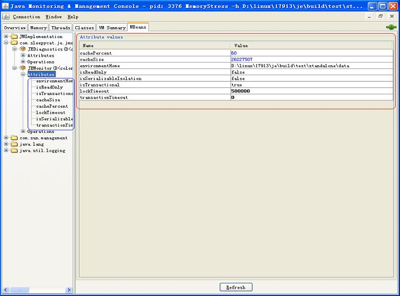 |
Attributes names and values are listed in the area outlined in
red. Most of the attributes are
immutable and cannot be changed through JEMonitor, with the exception
of cachePercent and cacheSize. Detailed
information about the attributes can be obtained by clicking on the
attribute name in the list outlined in
blue.
Monitoring Operations
JEMonitor provides the following operations, which can be invoked on
the monitored, running JE application:
 |
These operations mimic functionality available through the
com.sleepycat.je.Environment class. getEnvConfig
and getEnvironmentStats are of particular value for
obtaining information about the environment configuration, and current
statistics. More information about each operation is available through
a tool tip that displays when the mouse hovers over the operation button.
As stated above, RepJEMonitor provides two additional operations to monitor a
replicated JE application:
| 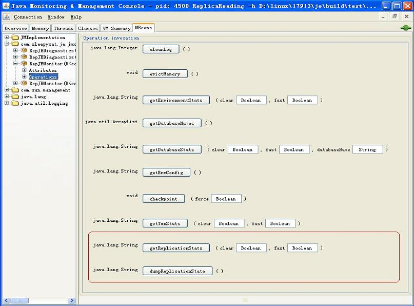 |
The additional operations are outlined
in red.
getReplicationStats displays replication specific
statistics, while dumpReplicationState displays
information about the replication group composition, current node
state, etc.
JEDiagnostics and RepJEDiagnostics
JEDiagnostics and RepJEDiagnostics, currently have the same attributes and operations list.
Diagnostic Attributes
JEDiagnostics and RepJEDiagnostics attribute are:
| 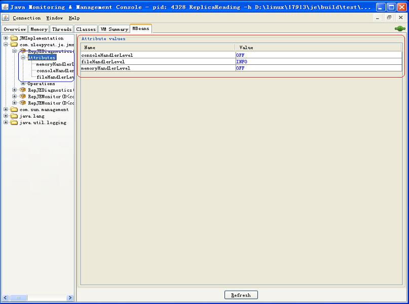 |
Attributes names and values are listed in the area outlined in red. These attributes manage the output levels for ConsoleHandler, FileHandler and MemoryHandler and let you change logging output for a running JE application. This is useful when doing detailed debugging, as described in Chapter 12 of the Getting Started Guide. Detailed information for each attribute is listed in the blue area and can be displayed by clicking on the attribute.
Diagnostic Operations
JEDiagnostics and RepJEDiagnostics currently support the same operations:
| 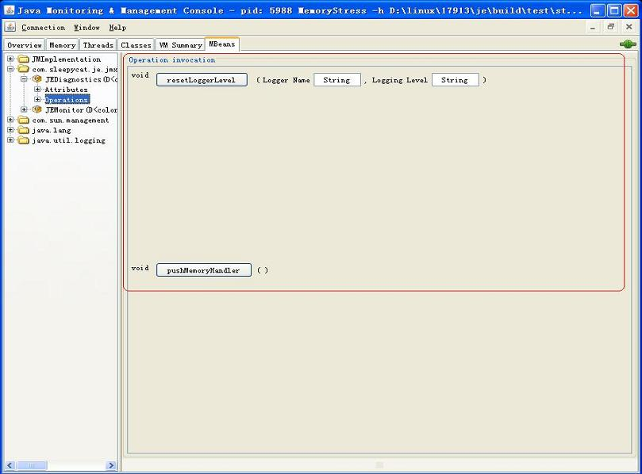 |
resetLoggerLevel allows you reset the level for a JE
logger, while
pushMemoryHandler lets you flush any logging output which
has been buffered in memory. Both are used only in debugging situations.
Berkeley DB Java Edition JConsole Plugin
Overview
The BDB JE JConsole plugins let you monitor and graphically display
information from running JE applications using
the jconsole utility which is distributed with the
JDK. Two plugins jars are provided: one for monitoring non-HA JE
applications (JE_HOME/lib/JEJConsole.jar), and another
for monitoring JE HA applications
(JE_HOME/lib/RepJEJConsole.jar). The former
lets jconsole monitor and display
EnvironmentStats while the latter shows both
EnvironmentStats
and ReplicatedEnvironmentStats.
The plugins can:
- Display stats from a running JE application,
- Optionally log those stats into a log file in csv format,
- Graph those stats so that you can directly see the changes,
The plugins are based on the JE MBeans described above and use the
MBean operations to periodically obtain statistics which are displayed
in a table or graph.
JEJConsole invokes
JEMonitor.getEnvironmentStats
while RepJEJConsole invokes
both RepJEMonitor.getEnvironmentStats and
RepJEMonitor.getReplicationStats.
Note that JEJConsole can be used to monitor both JE
non-replicated and replicated applications, but in the latter case
will not display the "JE Replicated Statistics" tab shown in the
second screen shot below.
See the javadoc for EnvironmentStats and ReplicatedEnvironmentStats for more information about the meaning of the statistics.
A screenshot of the JEJConsole plugin:
 |
The
RepJEJConsole plugin:
| 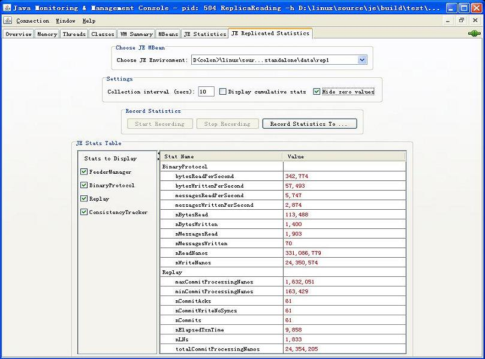 |
Using The Plugins
jconsole can only monitor applications that have
registered a DynamicMBean.
Both JE and JE HA will automatically register an appropriate
DynamicMBean when an Environment or
ReplicatedEnvironment is created, if the JEMonitor
system property is set to true (e.g. using -DJEMonitor=true
on the command line).
To use the JE and JE Replication plugins, invoke jconsole
with the -pluginpath option to specify one of the libraries.
For example:
jconsole -pluginpath JE_HOME/lib/JEJConsole.jar
or
jconsole -pluginpath JE_HOME/lib/RepJEJConsole.jar
When the plugin starts up, a menu will appear which lets you choose the process to monitor. Your JE application should appear if you have set -DJEMonitor=true.
Note: There is a known problem with discovering Java processes on Windows platforms when the temporary directory is on a FAT type file system. In that case, a Java application may need to set -XX:+PerfBypassFileSystemCheck on the Java command line in order for the process to appear on the connection menu.
After connecting to the process, a "JE Statistics" tab will
be shown in jconsole. The tab will be named "JE
Replicated Statistics" when using the
RepJEJConsole.jar plugin. The tab provides various
options:
-
Choose JE MBean
A JE application may have more than one
Environment, and therefore multipleDynamicMBeans. The plugin lets you select whichEnvironmentyou want to look at with the"Choose JE MBean"box:
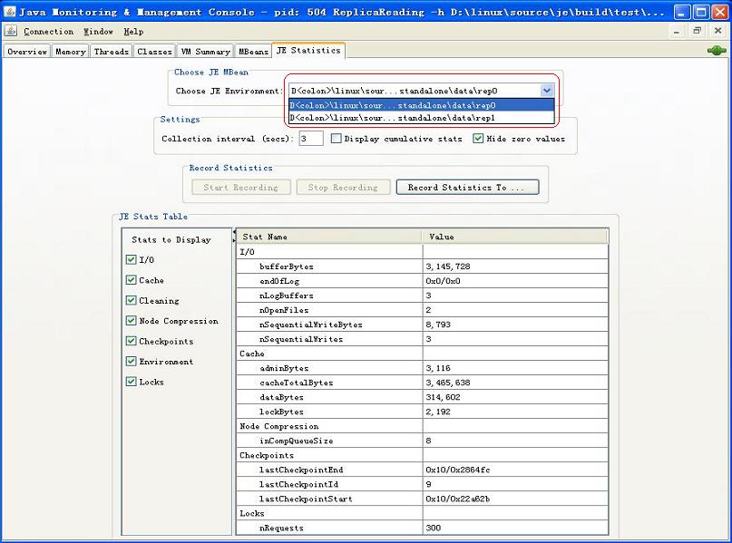 -
Set Collection Interval
The default interval for collecting environment stats is 10 seconds. You can change this by entering a new value in the
"Collection interval (secs):"field and then pressing the Enter key:

-
Display cumulative stats
By default, statistics are reset after each collection period, and the value displayed pertains only to the collection interval. For example, if the collection interval is 10 seconds, the plugin will display values for the first 10 seconds, the second 10 seconds, etc. You may choose instead to display statistics in a cumulative way, so that the displayed values accumulate as the application runs, instead of resetting in each interval. To do so, click the
"Display cumulative stats"checkbox:
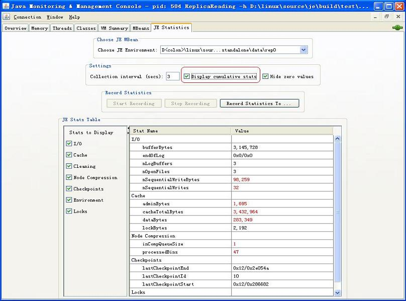 -
Limit the Display to Non-Zero values
JE provides numerous stats. Depending on your application, some of them may be 0 and therefore irrelevant for analyzing performance. You can hide these stats by clicking the
"Hide zero values"checkbox:
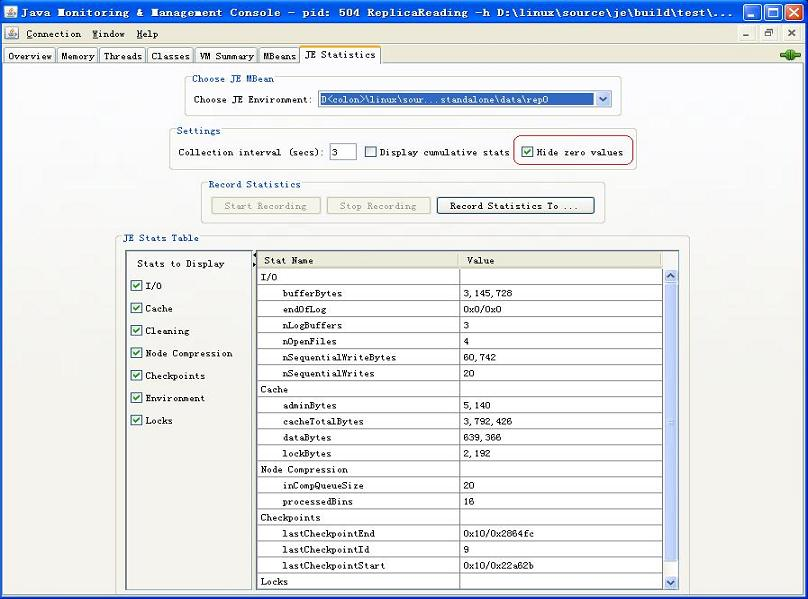 -
Choose a File for Logging Stats
You may specify the file to write selected stats to with the
"Record Statistics To..."button. Currently, only CSV format is supported:
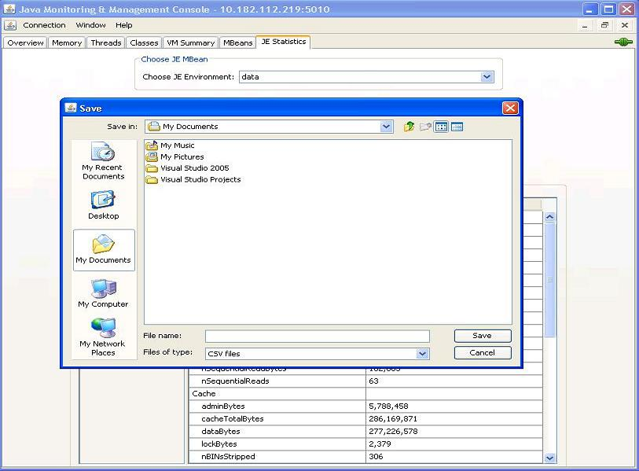 -
Start Recording
You can begin recording stats to the selected file by pressing the
"Start Recording"button. While recording is enabled, you can not change the recording interval, log file, or the specific stats being logged:
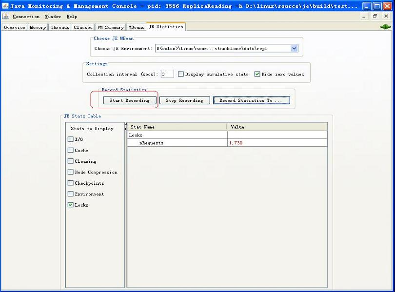 -
Stop Recording
You can stop recording stats by pressing the
"Stop Recording"button. You can only change the recording interval, log file, or the specific stats being logged when recording is stopped:
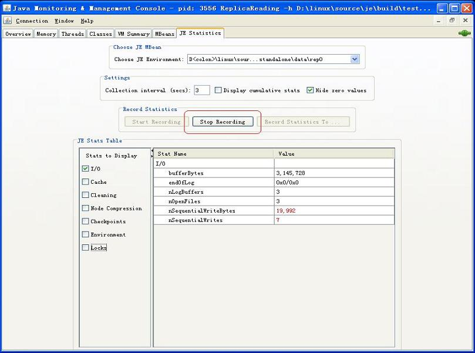 -
Choose Stats Group to Display
JE Environment stats are divided into several groups. You can specify which groups to display by checking the appropriate groups:
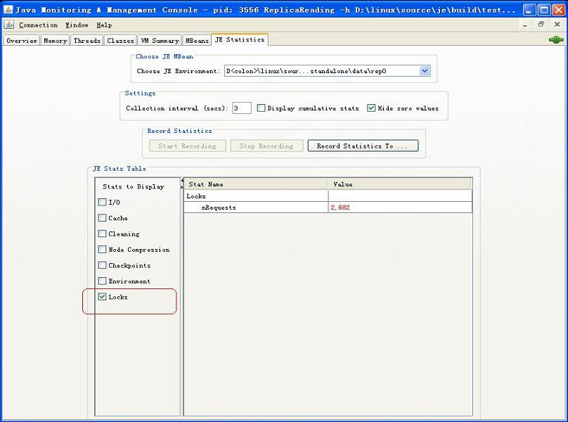 -
Stop Logging a Stat
All stats are logged by default. If you don't want to log a particular stat, you can right click on that stat, and uncheck
"Log This Stat":
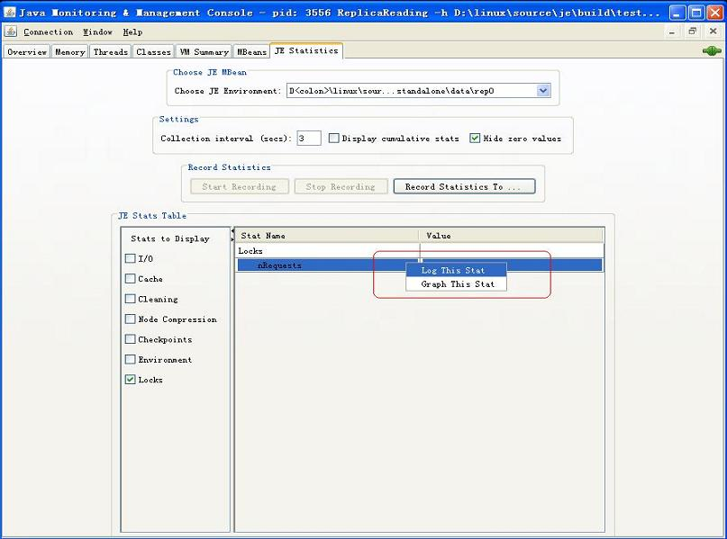 -
Graph a Stat
You may graph a particular stat by right clicking on the stat and selecting
"Graph This Stat". For example if you right-click onnMarkLNsProcessedand selectGraph This Stat...
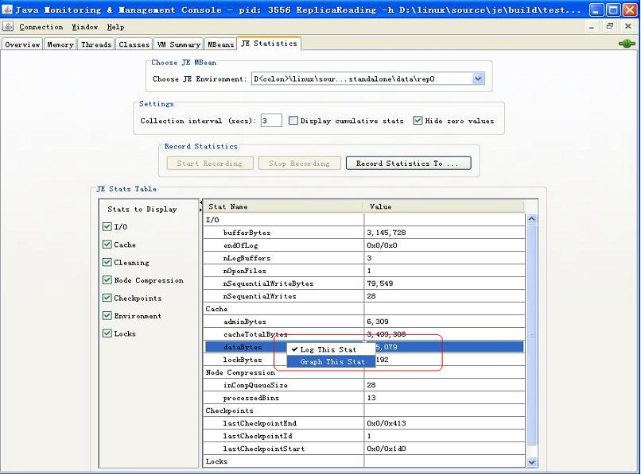
... then a new window with the dynamic graph will be displayed:
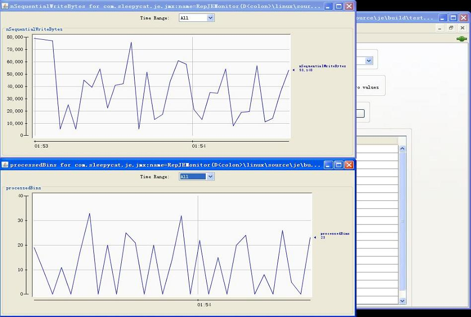 -
Show tips
Each stat has a mouse-over which describes its meaning. For example:
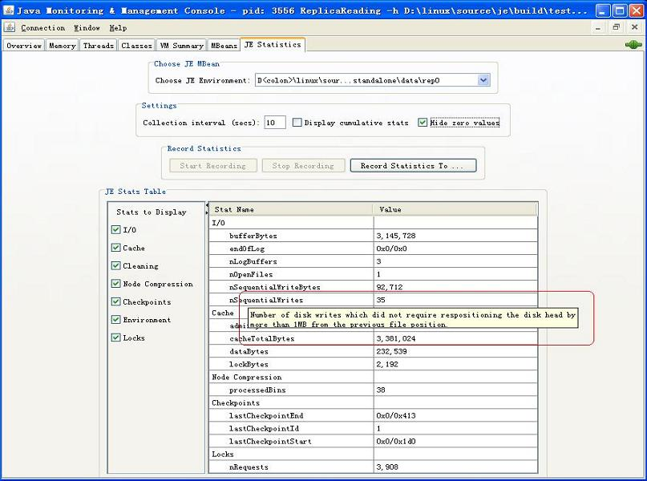
Please report bugs to the Berkeley DB Java Edition OTN forum.